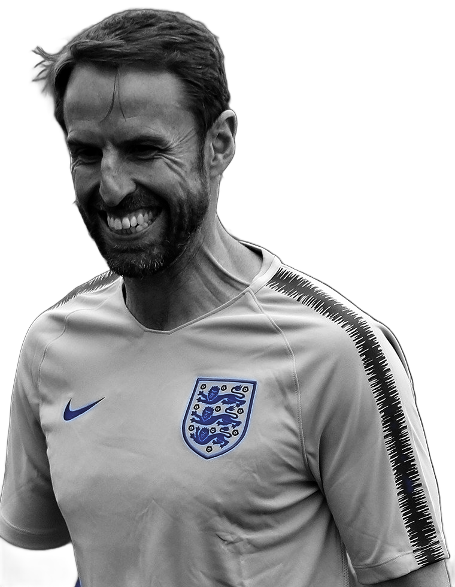
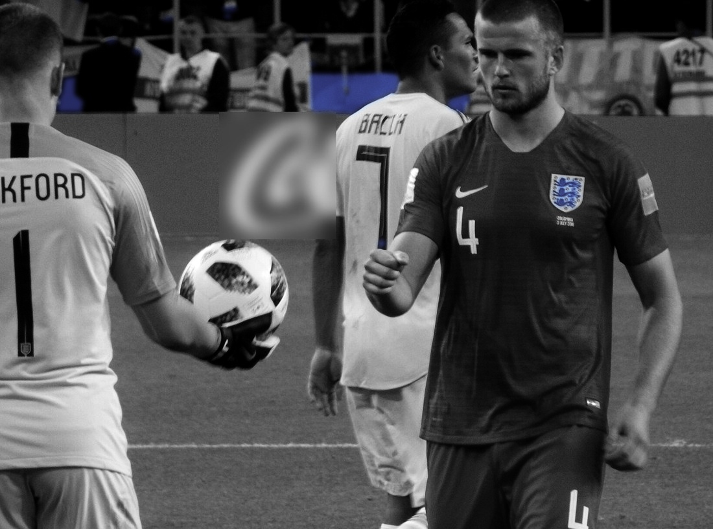
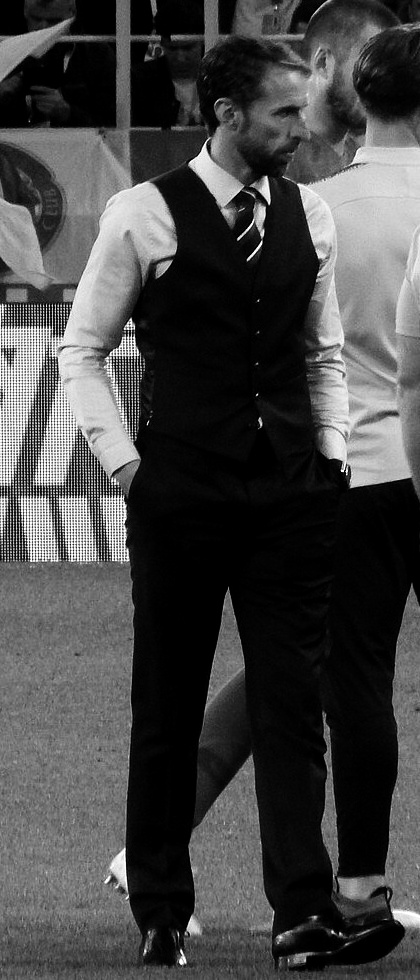

FUERA
1996

FICHA · 2018FOTO: KIRILL VENEDIKTOV, CC BY-SA 3.0

MOSCÚ, 3/7/2018 · PICKFORD LE DA EL BALÓN A DIER · FOTO: VOLTMETRO, CC BY-SA 4.0
MOSCÚ, 3/7/2018 · FOTO: VOLTMETRO, CC BY-SA 4.0TANDAS DE INGLATERRA EN MUNDIALES
TANDA · 3/7/2018RECREACIÓN
0 – 0
FOTOS: KIRILL VENEDIKTOV (CC BY-SA 3.0) Y VOLTMETRO (CC BY-SA 4.0),
MODIFICADAS, VÍA WIKIMEDIA COMMONS
PERIÓDICO, PORTERÍA, PIZARRA Y MARCADORES: RECREACIÓN